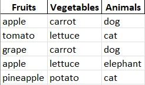
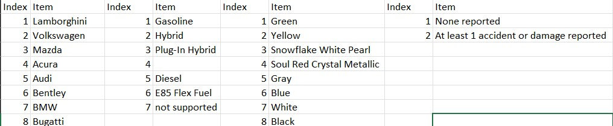

Description
This project processes categorical data from Excel files, converting it into numerical data for easier analysis. It also generates mapping files to document the transformation.
Objectives Completed
- Loaded and processed Excel files with categorical data.
- Assigned unique numerical indices to categorical values.
- Generated transformed data files for analysis.
- Created mapping files to document the transformation process.
Project Images
Test Example
This image demonstrates how the test set was used with a variety of random data that was assigned a numeric value.
Practical Use
This image illustrates how various factors in a used car, such as mileage, age, and condition, influence its price. It highlights the role of statistical analysis in identifying the most impactful factors for price prediction.
Summary
Understanding business analytics techniques such as regression, correlation, and statistics is crucial for drawing meaningful connections and identifying impactful factors in predictions. These techniques enable businesses to make data-driven decisions, optimize processes, and uncover insights that drive success in competitive markets.